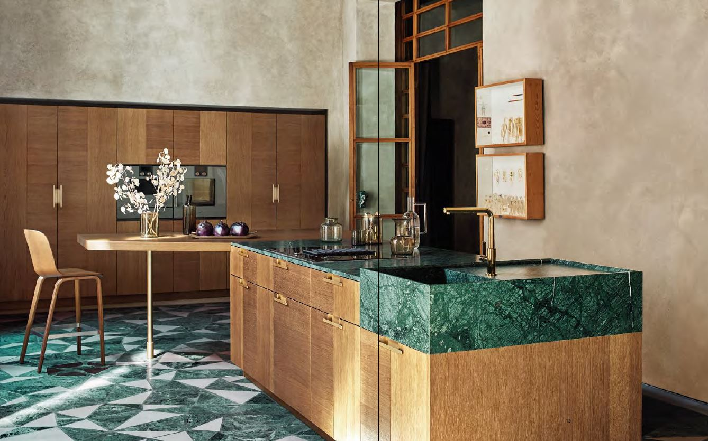
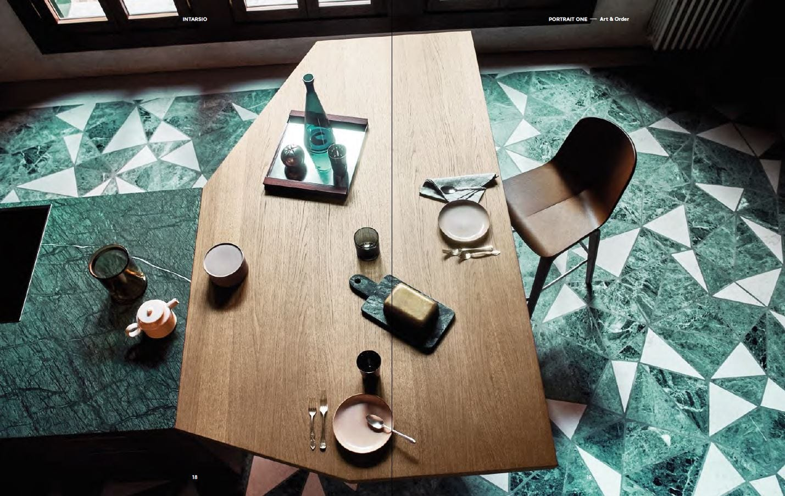
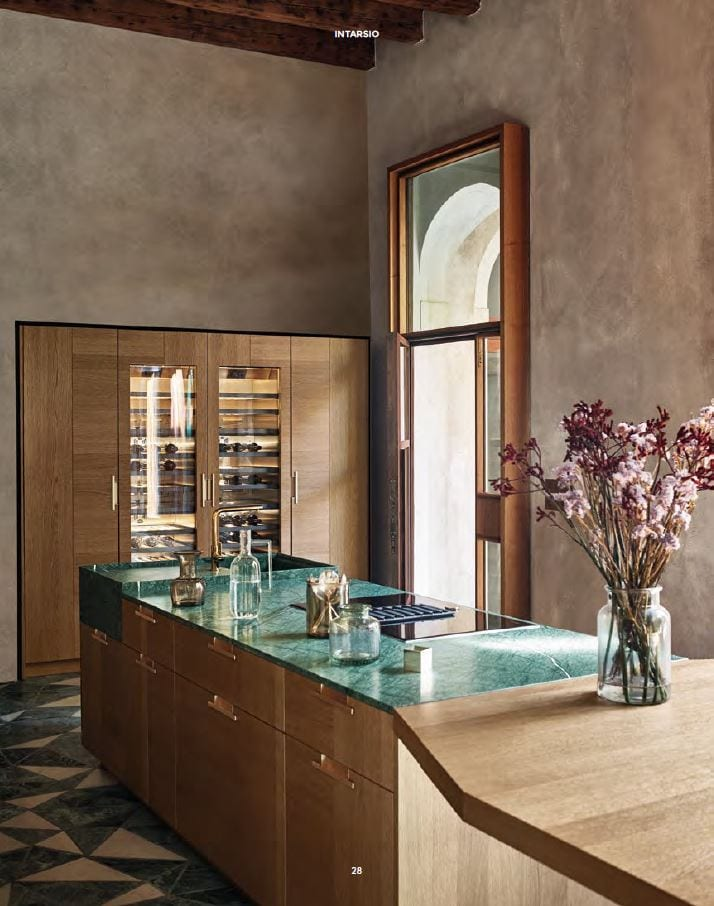
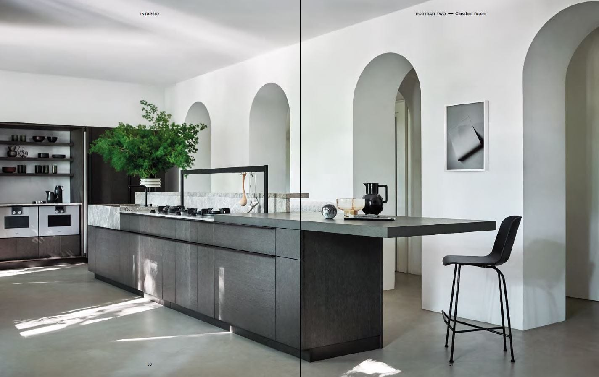
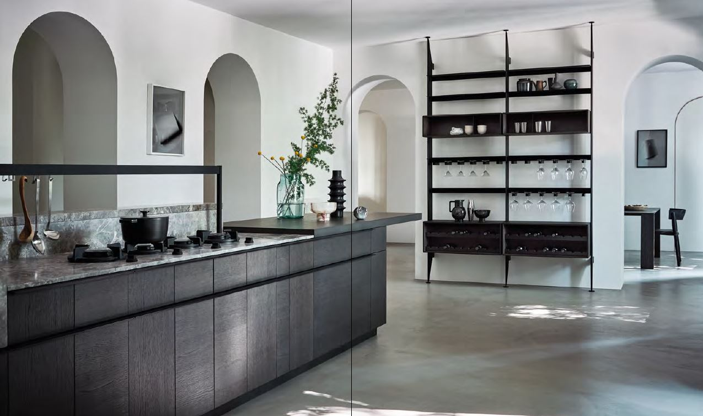
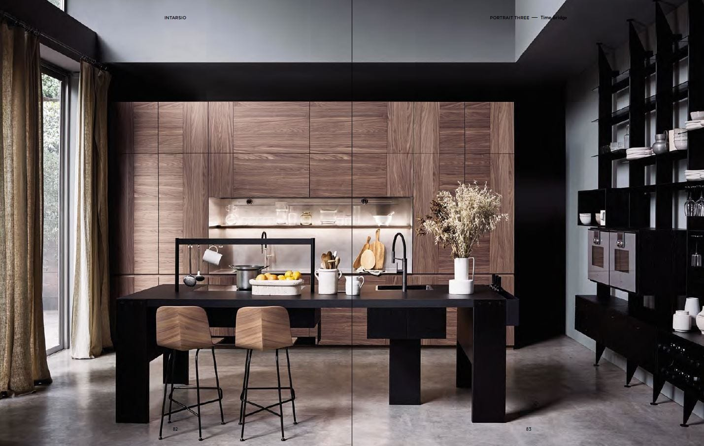
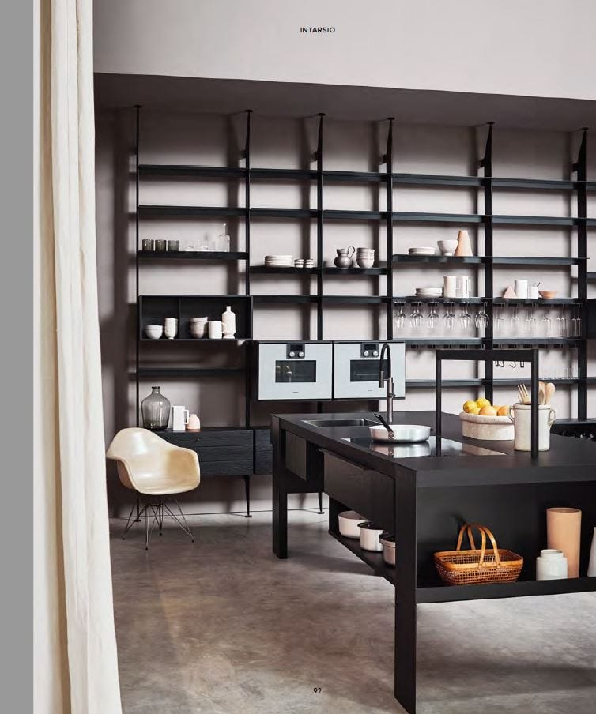
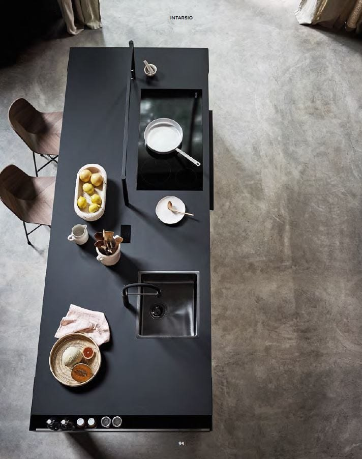

Intarsio
Design by García Cumini
Intarsio — коллекция, вдохновлённая техникой инкрустации: деревянные дверцы с контрастными вставками создают ритмичный орнамент, который превращает фасад в самостоятельный художественный объект. Название отсылает к итальянской традиции intarsio — искусству вкладного декора из различных пород дерева.
Сочетание текстур — тёплого дерева, матового лака и мрамора Verde Guatemala — выстраивает диалог между природным и рукотворным. Каждая комбинация материалов рождает уникальный образ, сохраняя при этом архитектурную строгость системы.
Коллекция создана студией García Cumini в русле философии Slow Design: вместо тенденций — вечные решения, вместо эффектных жестов — глубина и точность каждой детали.


Отступить от правил — значит произвести наибольшее впечатление. Я люблю симметрию, но не конвенцию. Ищу оригинал, породивший повторение. Те, кто доверяет традиции, знают: чтобы обновить, иногда достаточно просто изменить точку зрения. Они создают новые пропорции, рождающие новые ощущения. И каждый раз в этом открывается иная красота. Intarsio создана дизайнерами García Cumini — дуэтом, который соединяет испанскую экспрессию и итальянскую школу. Инкрустированный фасад здесь — это не орнамент ради орнамента, а осознанный архитектурный жест.



Geometric
Если красота подлинна — она расходится кругами. Переходит из места в место, порождая сложные ассоциации.
У неё бесчисленное множество граней. Она всегда одна и та же — и всегда разная. Именно так работает орнамент Intarsio: каждая комбинация уникальна, но система остаётся единой.



